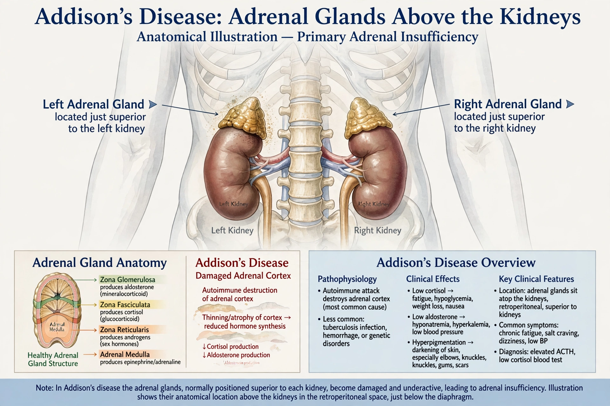

Addison's disease, also known as primary adrenal insufficiency, is a rare long-term endocrine disorder in which the adrenal glands do not produce enough steroid hormones — cortisol and often aldosterone.

Symptoms develop slowly: fatigue, muscle weakness, loss of appetite, salt craving, hyperpigmentation of skin, and orthostatic hypotension. An adrenal crisis — severe vomiting, pain, shock — can be fatal if untreated.
Thomas Addison described the condition in 1855. John F. Kennedy was a famous patient. The opposite disorder of cortisol excess is Cushing's syndrome.
Treatment is hormone replacement; crises require intravenous hydrocortisone and fluids.